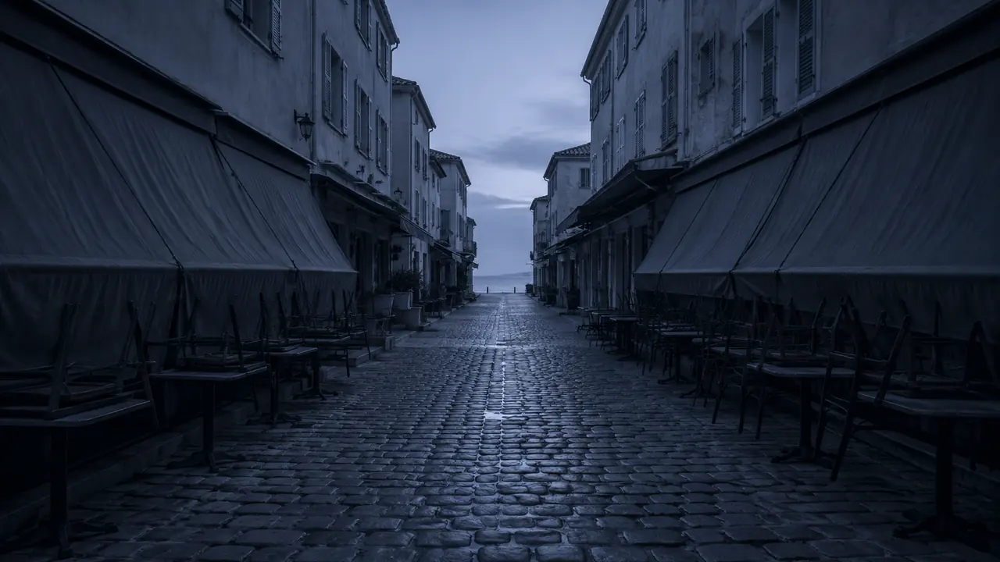
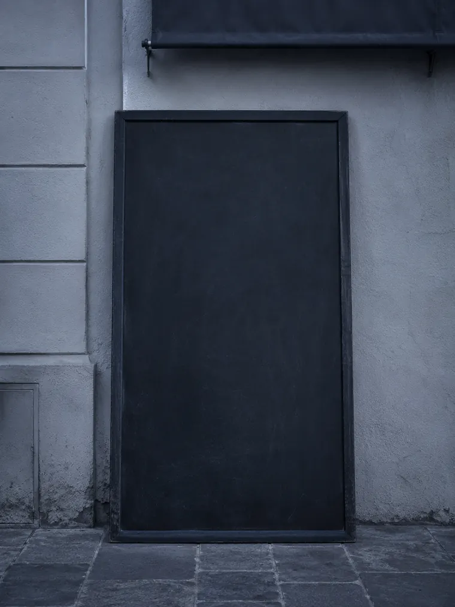
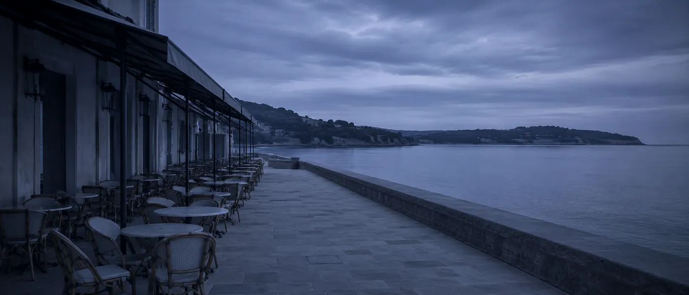

Réservation directe — sans commission par couvert
Bouton "Réserver une table" visible dès le premier écran, sans plateforme intermédiaire. En haute saison à Saint-Tropez, chaque couvert compte — ne laissez pas une commission partir ailleurs.

À Saint-Tropez, un dîner n'est jamais un simple repas — c'est une expérience. Votre site doit vendre cette expérience avant même que le client arrive à table. Galerie qui donne envie, réservation directe sans commission, SEO local sur les requêtes qui remplissent la salle.
Vos clients choisissent où dîner avant même d'arriver en ville. Votre site est la première table que vous leur servez.
À Saint-Tropez, la concurrence gastronomique est extrême — des tables étoilées aux beach clubs de Pampelonne en passant par les restaurants vue mer de la vieille ville. Un client international qui séjourne dans une villa ou sur un yacht planifie ses dîners à l'avance, depuis son téléphone, en cherchant sur Google. Si votre site ne lui donne pas envie, il réserve ailleurs.
Un restaurant gastronomique à Saint-Tropez ne peut pas se permettre un site lent avec des photos médiocres. L'expérience digitale doit être à la hauteur de l'expérience physique — des photos professionnelles qui donnent envie, un menu lisible sur mobile, une réservation en un clic sans commission. C'est exactement ce que je construis pour les établissements du Golfe.
Et cette clientèle ne cherche pas seulement "restaurant Saint-Tropez" — elle cherche "restaurant gastronomique Saint-Tropez", "beach club Pampelonne réservation", "meilleure table vue mer Saint-Tropez". Un site bien référencé vous rend visible sur ces requêtes qualifiées.


À Saint-Tropez, votre clientèle a des standards élevés et une exigence numérique à la hauteur. Votre site doit répondre aux attentes d'un public international habitué aux meilleures tables mondiales.
Bouton "Réserver une table" visible dès le premier écran, sans plateforme intermédiaire. En haute saison à Saint-Tropez, chaque couvert compte — ne laissez pas une commission partir ailleurs.
Menu codé en HTML, affiché directement sur iPhone. En français, en anglais, en italien. Un client anglophone sur un yacht consulte votre carte depuis son téléphone — elle doit être parfaite.
Plats signatures, terrasse au coucher de soleil, ambiance de la salle, cocktails — le client visualise l'expérience avant de réserver. Images WebP haute définition qui restent fluides sur mobile.
Section dédiée aux privatisations, anniversaires, soirées VIP et événements d'entreprise. Formulaire de demande qualifié. Un levier de chiffre d'affaires complémentaire que beaucoup de restaurants ne valorisent pas assez.
H1 géolocalisé, Schema.org Restaurant, Google Business Profile optimisé. Vous apparaissez sur les requêtes qui comptent — "restaurant gastronomique Saint-Tropez", "beach club Pampelonne", "dîner vue mer Saint-Tropez".
Vos clients sont britanniques, américains, italiens. Un site trilingue capte les recherches anglophones — "restaurant Saint-Tropez dinner", "best restaurant French Riviera" — et les convertit en réservations directes.
La carte se lit en salle.
Elle se choisit dans un taxi.
Le marché de la restauration à Saint-Tropez se divise en plusieurs segments très différenciés, chacun avec ses codes, sa clientèle et ses moments de consommation. Le restaurant gastronomique — table étoilée ou adresse reconnue — attire une clientèle qui réserve plusieurs semaines à l'avance, compare les menus, lit les critiques. Son site doit valoriser le chef, la signature culinaire, la cave à vins. Le beach club à Pampelonne ou sur le golfe fonctionne sur un modèle différent — une expérience qui se vend autant par l'ambiance et la musique que par la cuisine. Son site doit mettre en scène la plage, les DJ sets, les sunsets.
La plage privée, enfin, cible une clientèle de résidents en villa ou de plaisanciers qui veulent un espace exclusif, un service haut de gamme et la possibilité de privatiser pour un événement. Chacun de ces établissements a des besoins web très spécifiques — et un site générique qui ne distingue pas ces positionnements rate à la fois la conversion et le SEO.
Le référencement local d'un restaurant à Saint-Tropez repose sur deux types de requêtes. Les requêtes de découverte — "restaurant Saint-Tropez", "où dîner à Saint-Tropez" — génèrent beaucoup de trafic mais sont très concurrentielles. Les requêtes de longue traîne — "restaurant gastronomique Saint-Tropez vue mer", "beach club Pampelonne réservation", "meilleure terrasse Saint-Tropez" — génèrent moins de trafic mais des visiteurs avec une intention claire et immédiate. Ce sont ces dernières qui remplissent la salle.
Je structure votre site pour capturer les deux niveaux — une page d'accueil optimisée pour les requêtes génériques, et des sections de contenu qui ciblent les longues traînes qualifiées. Combiné à un Google Business Profile complet avec photos actualisées régulièrement, votre restaurant travaille à la fois les résultats organiques et le local pack Google Maps — les deux endroits où un client qui cherche où dîner ce soir regarde en premier.
Un restaurant à Saint-Tropez et un restaurant à Sainte-Maxime n'ont pas le même client, pas les mêmes attentes, pas le même ticket moyen. À Saint-Tropez, la clientèle est internationale, les prix sont élevés, l'expérience prime sur le rapport qualité-prix. Le site doit être immersif, premium, soigné — il parle à quelqu'un qui choisit sa table comme il choisit son hôtel. À Sainte-Maxime, la clientèle est plus mixte — locaux, familles, touristes — et le site doit être efficace, lisible, avec un menu clair et une réservation facile.
Si vous opérez sur les deux marchés, deux pages distinctes vous permettent de cibler précisément chaque clientèle — sans confusion pour vos visiteurs et sans cannibalisation sur Google. Voir aussi restaurant Sainte-Maxime.
La Table Méditerranéenne n'est pas un site client en activité : c'est un concept entièrement fictif, que j'ai conçu et développé de bout en bout pour montrer le niveau de finition que j'applique aux projets du Golfe. Le restaurant, la carte et les textes sont inventés.
La Table Méditerranéenne — site gastronomique pour un restaurant haut de gamme dans le Var. Design immersif, menu interactif FR/EN/IT, galerie de plats signature, formulaire de réservation et page événements privés.
Chargement optimisé, photos haute qualité qui donnent envie, réservation en un clic. Le niveau de qualité que je crée pour les restaurants du Golfe de Saint-Tropez.
Je connais les codes du Golfe, les beach clubs de Pampelonne, les tables gastronomiques et la clientèle internationale. Votre site parle le bon langage.
Zéro plateforme intermédiaire, zéro commission par couvert. Votre bouton de réservation va directement dans votre agenda ou votre email. Sur une saison à plein régime, l'économie est significative.
Images WebP compressées, lazy-loading, zéro WordPress. Vos photos de plats et de terrasse restent fluides même en 4G saturée en haute saison.
Vos clients viennent du monde entier. Un menu en anglais et en italien — dans la même élégance que votre carte — capte les réservations internationales directes.
Code, contenu, domaine — tout vous appartient. Pas de plateforme propriétaire. Maintenance optionnelle à partir de 60 €/mois.
Site Premium en 2 à 3 semaines. Vous êtes opérationnel avant l'ouverture de la saison. Devis sous 24h.
Un site se paie une fois.
Une commission, à chaque couvert.
Pas de frais cachés. Un devis avant de commencer. Vous restez propriétaire à 100%.
L'hébergement et le nom de domaine sont à votre charge. Vous restez propriétaire à 100% de votre site.
Le tarif ne dépend pas simplement du nombre de pages. Chaque projet est différent : le prix dépend du niveau de personnalisation, des objectifs, des fonctionnalités et de l'accompagnement souhaité. Mes projets commencent à 850 € avec l'offre Essentiel. L'offre Premium commence à 1 500 € — galerie HD, page événements, SEO optimisé. Les projets nécessitant une expérience entièrement personnalisée — menu multilingue FR/EN/IT, section beach club, SEO avancé multipage — font l'objet d'un devis sur mesure avec l'offre Ultra. Devis gratuit sous 24h.
Oui. H1 géolocalisé, Schema.org Restaurant, Google Business Profile optimisé. Votre établissement est structuré pour ressortir sur les requêtes locales ciblées — "restaurant gastronomique Saint-Tropez", "beach club Pampelonne", "dîner vue mer Saint-Tropez".
Oui. Beach clubs, plages privées, restaurants de bord de mer à Saint-Tropez et Pampelonne — je connais ces marchés et leurs clientèles. Section dédiée aux privatisations et événements VIP.
Oui en option. FR/EN/IT selon votre clientèle. La clientèle gastronomique de Saint-Tropez est majoritairement internationale — un site trilingue capte les réservations anglophones et italiennes directes.
Oui. Menu codé en HTML, affiché directement sur mobile. Indexable par Google pour le SEO, modifiable facilement pour les suggestions du jour ou la carte saisonnière.
Oui. Bouton de réservation directe sans commission par couvert. En haute saison à Saint-Tropez, l'économie de commission sur une salle complète chaque soir est significative.
Oui. Section dédiée aux événements privés, mariages, soirées VIP et privatisations d'espaces. Formulaire de demande qualifié. Un levier de chiffre d'affaires complémentaire souvent sous-exploité.
Site Premium en 2 à 3 semaines. Délai garanti dans le devis — opérationnel avant l'ouverture de la saison.
Notre page pilier métier — toute l'expertise pour les restaurants du Var 83, avec nos pages locales dédiées.
→ Page pilier restaurant VarLe marché de la rive d'en face — brasseries, restaurants traditionnels, clientèle mixte locale et tourisme.
→ Page restaurant Sainte-MaximeTous nos services web à Saint-Tropez — pour tous les professionnels du Golfe.
→ Page Saint-TropezBeach clubs de Pampelonne, plages privées, restaurants de bord de mer — notre zone d'expertise beach.
→ Page RamatuelleVotre site existe mais est lent ou vieilli ? Refonte complète avec diagnostic gratuit.
→ Voir la refonteDevis gratuit sous 24h. Décrivez votre établissement et votre clientèle — je vous propose une solution sur mesure.
→ Demander mon devisDéveloppeur web spécialisé restauration de luxe à Saint-Tropez. Devis gratuit sous 24h, maquette avant de commencer, délai garanti.
Création site internet restaurant Saint-Tropez · Site internet restaurant gastronomique Saint-Tropez · Beach club Pampelonne site internet · Développeur web restaurant luxe Golfe Saint-Tropez